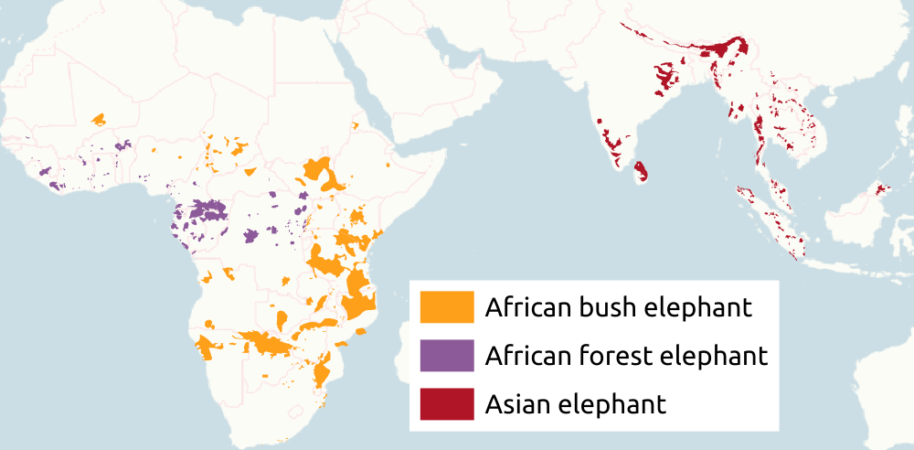
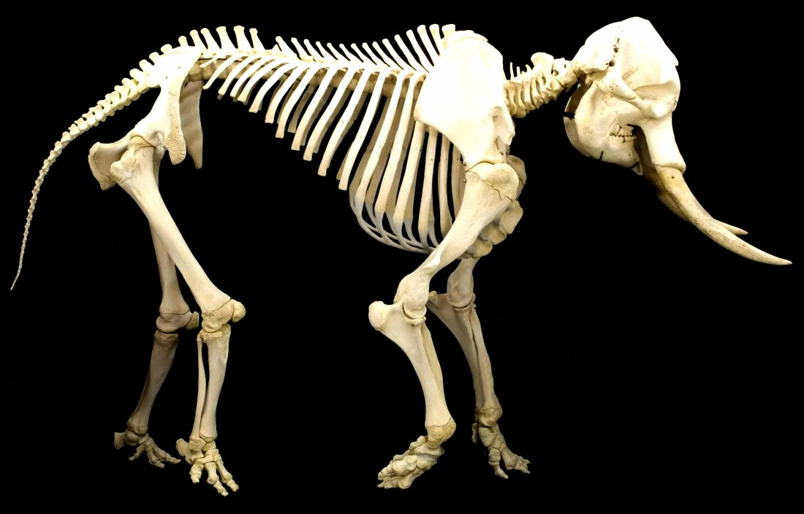
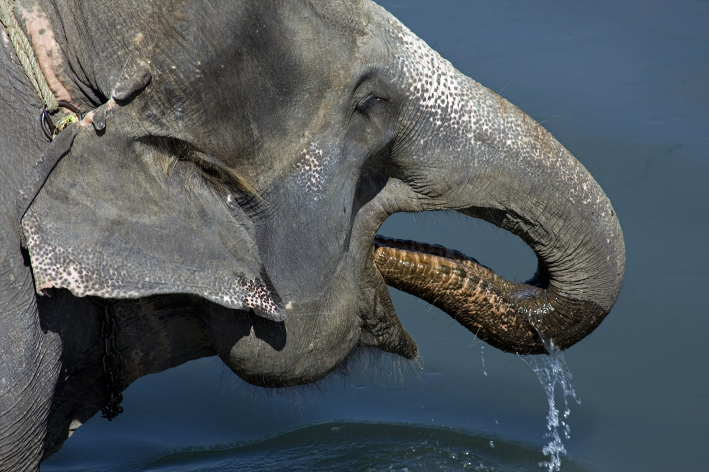
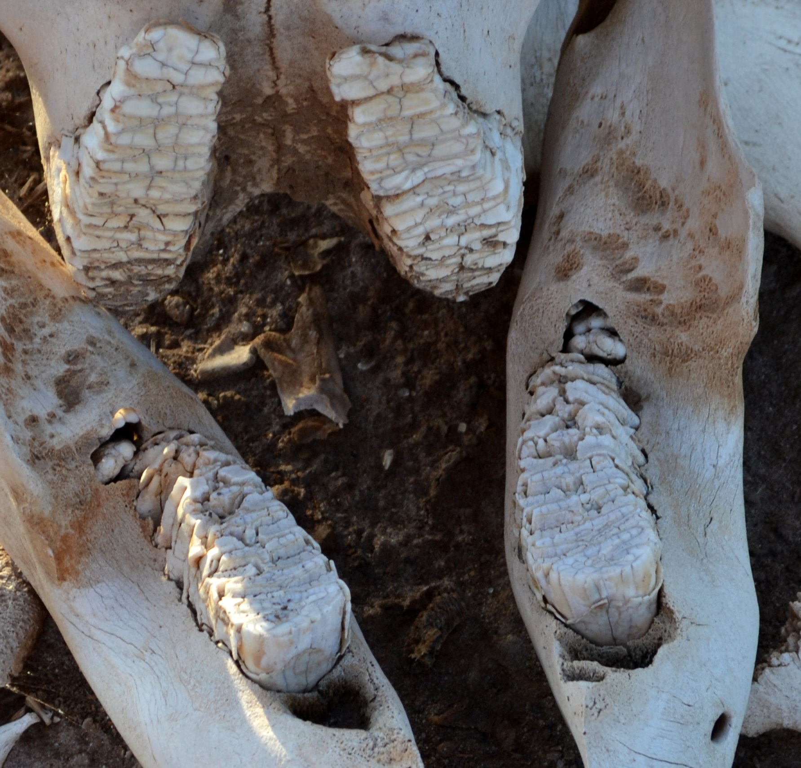
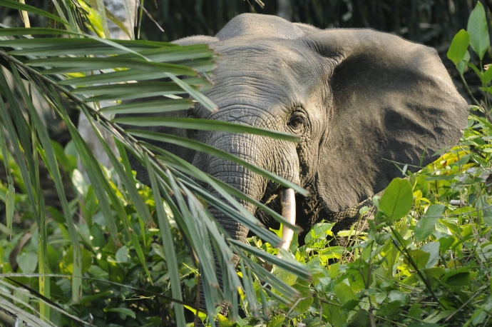
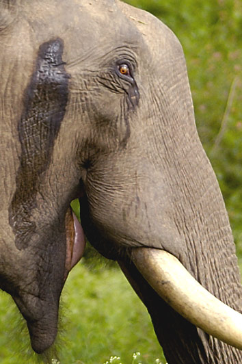
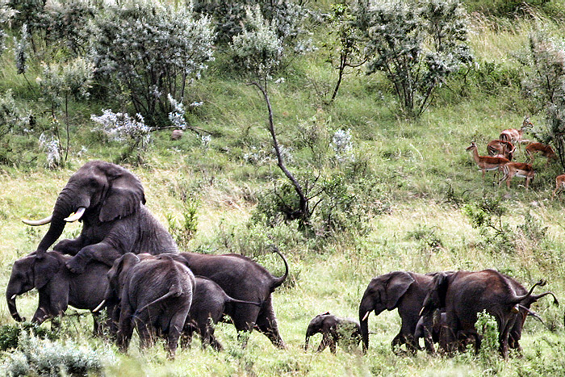

Elephant
Elephants are the largest existing land animals. Three living species are currently recognised: the African bush elephant, the African forest elephant, and the Asian elephant. They are the only surviving members of the family Elephantidae and the order Proboscidea. The order was formerly much more diverse during the Pleistocene, but most species became extinct during the Late Pleistocene epoch. Distinctive features of elephants include a long proboscis called a trunk, tusks, large ear flaps, pillar-like legs, and tough but sensitive skin. The trunk is used for breathing, bringing food and water to the mouth, and grasping objects. Tusks, which are derived from the incisor teeth, serve both as weapons and as tools for moving objects and digging. The large ear flaps assist in maintaining a constant body temperature as well as in communication. African elephants have larger ears and concave backs, whereas Asian elephants have smaller ears, and convex or level backs.
Elephants are scattered throughout sub-Saharan Africa, South Asia, and Southeast Asia and are found in different habitats, including savannahs, forests, deserts, and marshes. They are herbivorous, and they stay near water when it is accessible. They are considered to be keystone species, due to their impact on their environments. Elephants have a fission–fusion society, in which multiple family groups come together to socialise. Females (cows) tend to live in family groups, which can consist of one female with her calves or several related females with offspring. The groups, which do not include bulls, are usually led by the oldest cow, known as the matriarch.
Males (bulls) leave their family groups when they reach puberty and may live alone or with other males. Adult bulls mostly interact with family groups when looking for a mate. They enter a state of increased testosterone and aggression known as musth, which helps them gain dominance over other males as well as reproductive success. Calves are the centre of attention in their family groups and rely on their mothers for as long as three years. Elephants can live up to 70 years in the wild. They communicate by touch, sight, smell, and sound; elephants use infrasound and seismic communication over long distances. Elephant intelligence has been compared with that of primates and cetaceans. They appear to have self-awareness, and appear to show empathy for dying and dead family members.
African bush elephants and Asian elephants are listed as endangered and African forest elephants as Critically Endangered by the International Union for Conservation of Nature (IUCN). One of the biggest threats to elephant populations is the ivory trade, as the animals are poached for their ivory tusks. Other threats to wild elephants include habitat destruction and conflicts with local people. Elephants are used as working animals in Asia. In the past, they were used in war; today, they are often controversially put on display in zoos, or exploited for entertainment in circuses. Elephants are highly recognisable and have been featured in art, folklore, religion, literature, and popular culture.
Etymology
The word "elephant" is based on the Latin elephas (genitive elephantis) ("elephant"), which is the Latinised form of the Greek ἐλέφας (elephas) (genitive ἐλέφαντος (elephantos), probably from a non-Indo-European language, likely Phoenician. It is attested in Mycenaean Greek as e-re-pa (genitive e-re-pa-to) in Linear B syllabic script. As in Mycenaean Greek, Homer used the Greek word to mean ivory, but after the time of Herodotus, it also referred to the animal. The word "elephant" appears in Middle English as olyfaunt (c.1300) and was borrowed from Old French oliphant (12th century).
Taxonomy
Alongside their closest relatives belong to the family Elephantidae, the sole remaining family within the order Proboscidea. Their closest extant relatives are the sirenians (dugongs and manatees) and the hyraxes, with which they share the clade Paenungulata within the superorder Afrotheria. Elephants and sirenians are further grouped in the clade Tethytheria.
Three species of elephants are recognised; the African bush elephant (Loxodonta africana) and forest elephant (Loxodonta cyclotis) of sub-Saharan Africa, and the Asian elephant (Elephas maximus) of South and Southeast Asia. African elephants have larger ears, a concave back, more wrinkled skin, a sloping abdomen, and two finger-like extensions at the tip of the trunk. Asian elephants have smaller ears, a convex or level back, smoother skin, a horizontal abdomen that occasionally sags in the middle and one extension at the tip of the trunk. The looped ridges on the molars are narrower in the Asian elephant while those of the African are more diamond-shaped. The Asian elephant also has dorsal bumps on its head and some patches of depigmentation on its skin.
Among African elephants, forest elephants have smaller and more rounded ears and thinner and straighter tusks than bush elephants and are limited in range to the forested areas of western and Central Africa.[12] Both were traditionally considered a single species, Loxodonta africana, but molecular studies have affirmed their status as separate species. In 2017, DNA sequence analysis showed that L. cyclotis is more closely related to the extinct Palaeoloxodon antiquus, than it is to L. africana, possibly undermining the genus Loxodonta as a whole.
Evolution and extinct relatives
Over 180 extinct members and three major evolutionary radiations of the order Proboscidea have been recorded. The earliest proboscids, the African Eritherium and Phosphatherium of the late Paleocene, heralded the first radiation. The Eocene included Numidotherium, Moeritherium, and Barytherium from Africa. These animals were relatively small and aquatic. Later on, genera such as Phiomia and Palaeomastodon arose; the latter likely inhabited forests and open woodlands. Proboscidean diversity declined during the Oligocene. One notable species of this epoch was Eritreum melakeghebrekristosi of the Horn of Africa, which may have been an ancestor to several later species. The beginning of the Miocene saw the second diversification, with the appearance of the deinotheres and the mammutids. The former were related to Barytherium and lived in Africa and Eurasia,[21] while the latter may have descended from Eritreum and spread to North America.
The second radiation was represented by the emergence of the gomphotheres in the Miocene, which likely evolved from Eritreum[20] and originated in Africa, spreading to every continent except Australia and Antarctica. Members of this group included Gomphotherium and Platybelodon. The third radiation started in the late Miocene and led to the arrival of the elephantids, which descended from, and slowly replaced, the gomphotheres. The African Primelephas gomphotheroides gave rise to Loxodonta, Mammuthus, and Elephas. Loxodonta branched off earliest around the Miocene and Pliocene boundary while Mammuthus and Elephas diverged later during the early Pliocene. Loxodonta remained in Africa while Mammuthus and Elephas spread to Eurasia, and the former reached North America. At the same time, the stegodontids, another proboscidean group descended from gomphotheres, spread throughout Asia, including the Indian subcontinent, China, southeast Asia, and Japan. Mammutids continued to evolve into new species, such as the American mastodon.
At the beginning of the Pleistocene, elephantids experienced a high rate of speciation. The Pleistocene also saw the arrival of Palaeoloxodon namadicus, the largest terrestrial mammal of all time. Loxodonta atlantica became the most common species in northern and southern Africa but was replaced by Elephas iolensis later in the Pleistocene. Only when Elephas disappeared from Africa did Loxodonta become dominant once again, this time in the form of the modern species. Elephas diversified into new species in Asia, such as E. hysudricus and E. platycephus;[26] the latter the likely ancestor of the modern Asian elephant. Mammuthus evolved into several species, including the well-known woolly mammoth. Interbreeding appears to have been common among elephantid species, which in some cases led to species with three ancestral genetic components, such as the Palaeoloxodon antiquus. In the Late Pleistocene, most proboscidean species vanished during the Quaternary glaciation which killed off 50% of genera weighing over 5 kg (11 lb) worldwide.
Proboscideans experienced several evolutionary trends, such as an increase in size, which led to many giant species that stood up to 500 cm (16 ft 5 in) tall. As with other megaherbivores, including the extinct sauropod dinosaurs, the large size of elephants likely developed to allow them to survive on vegetation with low nutritional value. Their limbs grew longer and the feet shorter and broader. The feet were originally plantigrade and developed into a digitigrade stance with cushion pads and the sesamoid bone providing support. Early proboscideans developed longer mandibles and smaller craniums while more derived ones developed shorter mandibles, which shifted the head's centre of gravity. The skull grew larger, especially the cranium, while the neck shortened to provide better support for the skull. The increase in size led to the development and elongation of the mobile trunk to provide reach. The number of premolars, incisors and canines decreased.
Anatomy
Size
Elephants are the largest living terrestrial animals. African bush elephants are the largest species, with males being 304–336 cm (10 ft 0 in – 11 ft 0 in) tall at the shoulder with a body mass of 5.2–6.9 t (5.7–7.6 short tons) and females standing 247–273 cm (8 ft 1 in – 8 ft 11 in) tall at the shoulder with a body mass of 2.6–3.5 t (2.9–3.9 short tons). Male Asian elephants are usually about 261–289 cm (8 ft 7 in – 9 ft 6 in) tall at the shoulder and 3.5–4.6 t (3.9–5.1 short tons) whereas females are 228–252 cm (7 ft 6 in – 8 ft 3 in) tall at the shoulder and 2.3–3.1 t (2.5–3.4 short tons). African forest elephants are the smallest species, with males usually being around 209–231 cm (6 ft 10 in – 7 ft 7 in) tall at the shoulder and 1.7–2.3 t (1.9–2.5 short tons). Male African bush elephants are typically 23% taller than females, whereas male Asian elephants are only around 15% taller than females.
Bones
The skeleton of the elephant is made up of 326–351 bones.[34] The vertebrae are connected by tight joints, which limit the backbone's flexibility. African elephants have 21 pairs of ribs, while Asian elephants have 19 or 20 pairs.
Head
An elephant's skull is resilient enough to withstand the forces generated by the leverage of the tusks and head-to-head collisions. The back of the skull is flattened and spread out, creating arches that protect the brain in every direction.[36] The skull contains air cavities (sinuses) that reduce the weight of the skull while maintaining overall strength. These cavities give the inside of the skull a honeycomb-like appearance. The cranium is particularly large and provides enough room for the attachment of muscles to support the entire head. The lower jaw is solid and heavy.[34] Because of the size of the head, the neck is relatively short to provide better support.[6] Lacking a lacrimal apparatus, the eye relies on the harderian gland to keep it moist. A durable nictitating membrane protects the eye globe. The animal's field of vision is compromised by the location and limited mobility of the eyes.[37] Elephants are considered dichromats[38] and they can see well in dim light but not in bright light.
Ears
Elephant ears have thick bases with thin tips. The ear flaps, or pinnae, contain numerous blood vessels called capillaries. Warm blood flows into the capillaries, helping to release excess body heat into the environment. This occurs when the pinnae are still, and the animal can enhance the effect by flapping them. Larger ear surfaces contain more capillaries, and more heat can be released. Of all the elephants, African bush elephants live in the hottest climates, and have the largest ear flaps. Elephants are capable of hearing at low frequencies and are most sensitive at 1 kHz (in close proximity to the Soprano C).

Trunk
The trunk, or proboscis, is a fusion of the nose and upper lip, although in early fetal life, the upper lip and trunk are separated.[6] The trunk is elongated and specialised to become the elephant's most important and versatile appendage. It contains up to 150,000 separate muscle fascicles, with no bone and little fat. These paired muscles consist of two major types: superficial (surface) and internal. The former are divided into dorsals, ventrals, and laterals while the latter are divided into transverse and radiating muscles. The muscles of the trunk connect to a bony opening in the skull. The nasal septum is composed of tiny muscle units that stretch horizontally between the nostrils. Cartilage divides the nostrils at the base. As a muscular hydrostat, the trunk moves by precisely coordinated muscle contractions. The muscles work both with and against each other. A unique proboscis nerve – formed by the maxillary and facial nerves – runs along both sides of the trunk.
Elephant trunks have multiple functions, including breathing, olfaction, touching, grasping, and sound production. The animal's sense of smell may be four times as sensitive as that of a bloodhound. The trunk's ability to make powerful twisting and coiling movements allows it to collect food, wrestle with other elephants, and lift up to 350 kg (770 lb). It can be used for delicate tasks, such as wiping an eye and checking an orifice, and is capable of cracking a peanut shell without breaking the seed. With its trunk, an elephant can reach items at heights of up to 7 m (23 ft) and dig for water under mud or sand. Individuals may show lateral preference when grasping with their trunks: some prefer to twist them to the left, others to the right. Elephants are capable of dilating their nostrils at a radius of nearly 30%, increasing the nasal volume by 64%, and can inhale at over 150 m/s (490 ft/s) which is around 30 times the speed of a human sneeze. Elephants can suck up food and water both to spray in the mouth and, in the case of the later, to sprinkle on their bodies. An adult Asian elephant is capable of holding 8.5 L (2.2 US gal) of water in its trunk. They will also spray dust or grass on themselves. When underwater, the elephant uses its trunk as a snorkel.
Teeth
Elephants usually have 26 teeth: the incisors, known as the tusks, 12 deciduous premolars, and 12 molars. Unlike most mammals, which grow baby teeth and then replace them with a single permanent set of adult teeth, elephants are polyphyodonts that have cycles of tooth rotation throughout their lives. The chewing teeth are replaced six times in a typical elephant's lifetime. Teeth are not replaced by new ones emerging from the jaws vertically as in most mammals. Instead, new teeth grow in at the back of the mouth and move forward to push out the old ones. The first chewing tooth on each side of the jaw falls out when the elephant is two to three years old. The second set of chewing teeth falls out at four to six years old. The third set falls out at 9–15 years of age and set four lasts until 18–28 years of age. The fifth set of teeth falls out at the early 40s. The sixth (and usually final) set must last the elephant the rest of its life. Elephant teeth have loop-shaped dental ridges, which are thicker and more diamond-shaped in African elephants.
Skin
An elephant's skin is generally very tough, at 2.5 cm (1 in) thick on the back and parts of the head. The skin around the mouth, anus, and inside of the ear is considerably thinner. Elephants typically have grey skin, but African elephants look brown or reddish after wallowing in coloured mud. Asian elephants have some patches of depigmentation, particularly on the forehead and ears and the areas around them. Calves have brownish or reddish hair, especially on the head and back. As elephants mature, their hair darkens and becomes sparser, but dense concentrations of hair and bristles remain on the end of the tail as well as the chin, genitals and the areas around the eyes and ear openings. Normally the skin of an Asian elephant is covered with more hair than its African counterpart. Their hair is thought to be for thermoregulation, helping them lose heat in their hot environments.
An elephant uses mud as a sunscreen, protecting its skin from ultraviolet light. Although tough, an elephant's skin is very sensitive. Without regular mud baths to protect it from burning, insect bites and moisture loss, an elephant's skin suffers serious damage. After bathing, the elephant will usually use its trunk to blow dust onto its body and this dries into a protective crust. Elephants have difficulty releasing heat through the skin because of their low surface-area-to-volume ratio, which is many times smaller than that of a human. They have even been observed lifting up their legs, presumably in an effort to expose their soles to the air.
Organs
The brain of an elephant weighs 4.5–5.5 kg (10–12 lb) compared to 1.6 kg (4 lb) for a human brain. It is the largest of all terrestrial mammals. While the elephant brain is larger overall, it is proportionally smaller than the human brain when compared to their size. At birth, an elephant's brain already weighs 30–40% of its adult weight. The cerebrum and cerebellum are well developed, and the temporal lobes are so large that they bulge out laterally. Their temporal lobes are proportionally larger than in other animals, including humans. The throat of an elephant appears to contain a pouch where it can store water for later use. The larynx of the elephant is the largest known among mammals. The vocal folds are long and are attached close to the epiglottis base. When comparing an elephant's vocal folds to those of a human, an elephant's are longer, thicker, and have a larger cross-sectional area. In addition, they are tilted at 45 degrees and positioned more anteriorly than a human's vocal folds.
The heart of an elephant weighs 12–21 kg (26–46 lb). It has a double-pointed apex, an unusual trait among mammals. In addition, the ventricles separate near the top of the heart, a trait they share with sirenians. When standing, the elephant's heart beats approximately 30 times per minute. Unlike many other animals, the heart rate speeds up by 8 to 10 beats per minute when the elephant is lying down. The blood vessels in most of the body are wide and thick and can withstand high blood pressures. The lungs are attached to the diaphragm, and breathing relies mainly on the diaphragm rather than the expansion of the ribcage. Connective tissue exists in place of the pleural cavity. This may allow the animal to deal with the pressure differences when its body is underwater and its trunk is breaking the surface for air, although this explanation has been questioned. Another possible function for this adaptation is that it helps the animal suck up water through the trunk. Elephants inhale mostly through the trunk, although some air goes through the mouth. They have a hindgut fermentation system, and their large and small intestines together reach 35 m (115 ft) in length. The majority of an elephant's food intake goes undigested despite the process lasting up to a day.
Body temperature
Elephants are homeotherms, and maintain their average body temperature at ~ 36 °C, with minimum 35.2 °C during cool season, and maximum 38.0 °C during hot dry season. Sweat glands are absent in the elephant's skin, but water diffuses through the skin, allowing cooling by evaporative loss. Other physiological or behavioral features may assist with thermoregulation such as flapping ears, mud bathing, spraying water on the skin, seeking shade, and adopting different walking patterns. In addition, the interconnected crevices in the elephant's skin is thought to impede dehydration and improve thermal regulation over a long period of time.
Behaviour and life history
Ecology and activities
The African bush elephant can be found in habitats as diverse as dry savannahs, deserts, marshes, and lake shores, and in elevations from sea level to mountains above the snow line. Forest elephants mainly live in equatorial forests but will enter gallery forests and ecotones between forests and savannahs. Asian elephants prefer areas with a mix of grasses, low woody plants, and trees, primarily inhabiting dry thorn-scrub forests in southern India and Sri Lanka and evergreen forests in Malaya. Elephants are herbivorous and will eat leaves, twigs, fruit, bark, grass and roots. They are born with sterile intestines and require bacteria obtained from their mother's feces to digest vegetation.[86] African elephants are mostly browsers while Asian elephants are mainly grazers. They can consume as much as 150 kg (330 lb) of food and 40 L (11 US gal) of water in a day. Elephants tend to stay near water sources. Major feeding bouts take place in the morning, afternoon and night. At midday, elephants rest under trees and may doze off while standing. Sleeping occurs at night while the animal is lying down. Elephants average 3–4 hours of sleep per day. Both males and family groups typically move 10–20 km (6–12 mi) a day, but distances as far as 90–180 km (56–112 mi) have been recorded in the Etosha region of Namibia. Elephants go on seasonal migrations in search of food, water, minerals, and mates. At Chobe National Park, Botswana, herds travel 325 km (202 mi) to visit the river when the local waterholes dry up.
Because of their large size, elephants have a huge impact on their environments and are considered keystone species. Their habit of uprooting trees and undergrowth can transform savannah into grasslands; when they dig for water during drought, they create waterholes that can be used by other animals. They can enlarge waterholes when they bathe and wallow in them. At Mount Elgon, elephants excavate caves that are used by ungulates, hyraxes, bats, birds and insects. Elephants are important seed dispersers; African forest elephants ingest and defecate seeds, with either no effect or a positive effect on germination. The seeds are typically dispersed in large amounts over great distances. In Asian forests, large seeds require giant herbivores like elephants and rhinoceros for transport and dispersal. This ecological niche cannot be filled by the next largest herbivore, the tapir. Because most of the food elephants eat goes undigested, their dung can provide food for other animals, such as dung beetles and monkeys. Elephants can have a negative impact on ecosystems. At Murchison Falls National Park in Uganda, the overabundance of elephants has threatened several species of small birds that depend on woodlands. Their weight can compact the soil, which causes the rain to run off, leading to erosion.
Forest elephant in habitat. It is considered to be an important seed disperser. Elephants typically coexist peacefully with other herbivores, which will usually stay out of their way. Some aggressive interactions between elephants and rhinoceros have been recorded. At Aberdare National Park, Kenya, a rhino attacked an elephant calf and was killed by the other elephants in the group.[87] At Hluhluwe–Umfolozi Game Reserve, South Africa, introduced young orphan elephants went on a killing spree that claimed the lives of 36 rhinos during the 1990s, but ended with the introduction of older males.[94] The size of adult elephants makes them nearly invulnerable to predators. Calves may be preyed on by lions, spotted hyenas, and wild dogs in Africa and tigers in Asia. The lions of Savuti, Botswana, have adapted to hunting elephants, mostly calves, juveniles or even sub-adults, during the dry season, and a pride of 30 lions has been normally recorded killing juvenile individuals between the ages of four and eleven years, and a young bull of about 15 years in an exceptional case. There are rare reports of adult Asian elephants falling prey to tigers. Elephants appear to distinguish between the growls of larger predators like tigers and smaller predators like leopards (which have not been recorded killing calves); they react to leopards less fearfully and more aggressively. Elephants tend to have high numbers of parasites, particularly nematodes, compared to other herbivores. This is due to lower predation pressures that would otherwise kill off many of the individuals with significant parasite loads.
Social organisation
Female elephants spend their entire lives in tight-knit matrilineal family groups, some of which are made up of more than ten members, including three mothers and their dependent offspring, and are led by the matriarch which is often the eldest female.[101] She remains leader of the group until death[95] or if she no longer has the energy for the role;[102] a study on zoo elephants showed that when the matriarch died, the levels of faecal corticosterone ('stress hormone') dramatically increased in the surviving elephants.[103] When her tenure is over, the matriarch's eldest daughter takes her place; this occurs even if her sister is present.[95] One study found that younger matriarchs are more likely than older ones to under-react to severe danger.[104] Family groups may split after becoming too large for the available resources.
The social circle of the female elephant does not necessarily end with the small family unit. In the case of elephants in Amboseli National Park, Kenya, a female's life involves interaction with other families, clans, and subpopulations. Families may associate and bond with each other, forming what are known as bond groups which typically made of two family groups. During the dry season, elephant families may cluster together and form another level of social organisation known as the clan. Groups within these clans do not form strong bonds, but they defend their dry-season ranges against other clans. There are typically nine groups in a clan. The Amboseli elephant population is further divided into the "central" and "peripheral" subpopulations.
Some elephant populations in India and Sri Lanka have similar basic social organisations. There appear to be cohesive family units and loose aggregations. They have been observed to have "nursing units" and "juvenile-care units". In southern India, elephant populations may contain family groups, bond groups and possibly clans. Family groups tend to be small, consisting of one or two adult females and their offspring. A group containing more than two adult females plus offspring is known as a "joint family". Malay elephant populations have even smaller family units and do not have any social organisation higher than a family or bond group. Groups of African forest elephants typically consist of one adult female with one to three offspring. These groups appear to interact with each other, especially at forest clearings.
Lone bull: Adult male elephants spend much of their time alone or in single-sex groups The social life of the adult male is very different. As he matures, a male spends more time at the edge of his group and associates with outside males or even other families. At Amboseli, young males spend over 80% of their time away from their families when they are 14–15. When males permanently leave, they either live alone or with other males. The former is typical of bulls in dense forests. Asian males are usually solitary, but occasionally form groups of two or more individuals; the largest consisted of seven bulls. Larger bull groups consisting of over 10 members occur only among African bush elephants, the largest of which numbered up to 144 individuals. Bulls only return to the herd to breed or to socialize, they do not provide prenatal care to their offspring but rather play a fatherly role to younger bulls to show dominance.
Male elephants can be quite sociable when not competing for dominance or mates, and will form long-term relationships.[107] A dominance hierarchy exists among males, whether they range socially or solitarily. Dominance depends on the age, size and sexual condition,[106] and when in groups, males follow the lead of the dominant bull. Young bulls may seek out the company and leadership of older, more experienced males,[107] whose presence appears to control their aggression and prevent them from exhibiting "deviant" behaviour.[108] Adult males and females come together for reproduction. Bulls associate with family groups if an oestrous cow is present.

Sexual behaviour
Musth
Adult males enter a state of increased testosterone known as musth. In a population in southern India, males first enter musth at the age of 15, but it is not very intense until they are older than 25. At Amboseli, bulls under 24 do not go into musth, while half of those aged 25–35 and all those over 35 do. Young bulls appear to enter musth during the dry season (January–May), while older bulls go through it during the wet season (June–December). The main characteristic of a bull's musth is a fluid secreted from the temporal gland that runs down the side of his face. He may urinate with his penis still in his sheath, which causes the urine to spray on his hind legs. Behaviours associated with musth include walking with the head held high and swinging, picking at the ground with the tusks, marking, rumbling and waving only one ear at a time. This can last from a day to four months.[109]
Males become extremely aggressive during musth. Size is the determining factor in agonistic encounters when the individuals have the same condition. In contests between musth and non-musth individuals, musth bulls win the majority of the time, even when the non-musth bull is larger. A male may stop showing signs of musth when he encounters a musth male of higher rank. Those of equal rank tend to avoid each other. Agonistic encounters typically consist of threat displays, chases, and minor sparring with the tusks. Serious fights are rare.
Mating
Elephants are polygynous breeders,[110] and copulations are most frequent during the peak of the wet season.[111] A cow in oestrus releases chemical signals (pheromones) in her urine and vaginal secretions to signal her readiness to mate. A bull will follow a potential mate and assess her condition with the flehmen response, which requires the male to collect a chemical sample with his trunk and bring it to the vomeronasal organ.[112] The oestrous cycle of a cow lasts 14–16 weeks with a 4–6-week follicular phase and an 8- to 10-week luteal phase. While most mammals have one surge of luteinizing hormone during the follicular phase, elephants have two. The first (or anovulatory) surge, could signal to males that the female is in oestrus by changing her scent, but ovulation does not occur until the second (or ovulatory) surge.[113] Fertility rates in cows decline around 45–50 years of age.
Bulls engage in a behaviour known as mate-guarding, where they follow oestrous females and defend them from other males.[114] Most mate-guarding is done by musth males, and females actively seek to be guarded by them, particularly older ones.[115] Thus these bulls have more reproductive success.[106] Musth appears to signal to females the condition of the male, as weak or injured males do not have normal musths.[116] For young females, the approach of an older bull can be intimidating, so her relatives stay nearby to provide support and reassurance.[117] During copulation, the male lays his trunk over the female's back.[118] The penis is very mobile, being able to move independently of the pelvis.[119] Before mounting, it curves forward and upward. Copulation lasts about 45 seconds and does not involve pelvic thrusting or ejaculatory pause.[120] Elephant sperm must swim close to 2 m (6.6 ft) to reach the egg. By comparison, human sperm has to swim around only 76.2 mm (3.00 in).
Homosexual behaviour is frequent in both sexes. As in heterosexual interactions, this involves mounting. Male elephants sometimes stimulate each other by playfighting and "championships" may form between old bulls and younger males. Female same-sex behaviours have been documented only in captivity where they are known to masturbate one another with their trunks.
